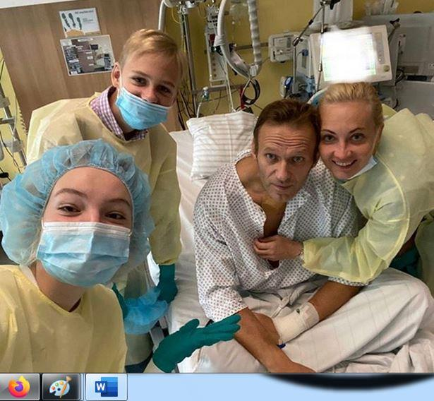
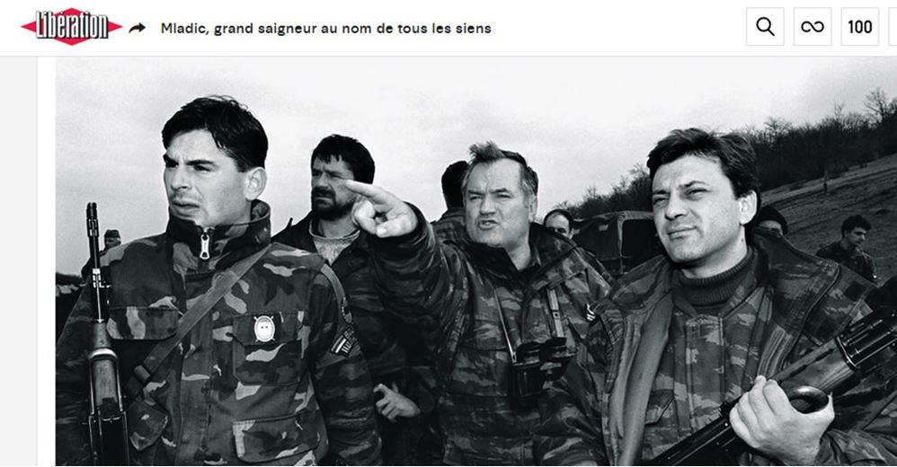

Le 18 mars 2018, j'écrivais un article sur l'affaire Skripal repris par plusieurs dizaines de sites internet de réinformation. Cet article avait eu, à l'époque, un certain succès d'audience, cumulant beaucoup plus de 100 000 lecteurs sur la totalité des sites de publication, et il avait été plébiscité par une immense majorité des commentateurs1.
Aujourd'hui, je tiens à partager avec ceux qui s'intéressent à mes analyses une réponse faite à l'un de mes correspondants, spécialiste de la Russie, qui m'interrogeait sur l'affaire Navalny et qui me disait ne pas savoir quoi en penser.
Mon cher François,
Comme vous le pressentez, je ne pense pas une seule seconde que Poutine puisse être impliqué dans ce genre d'affaire qui, comme vous le soulignez, n'est pas la première du genre. Et si c'était le cas, on l'imagine mal autoriser le transfert de la victime en Allemagne, toute trace de Novitchok dehors, et d'offrir ainsi la possibilité aux occidentaux de l'accuser, une fois de plus, d'empoisonner ses opposants.
Les médias mainstream occidentaux et la gouvernance allemande prennent Poutine pour un imbécile, ce qu'il n'est pas, et surtout nous prennent tous pour des « demeurés », incapables de réfléchir. Cette farce ne tient évidemment pas la route et la gouvernance allemande ne se grandit pas à imiter le comportement des britanniques lors de l'affaire Skripal et à tenter de faire croire une telle énormité.
Il est vrai que les Allemands n'en sont pas à leur coup d'essai.
Dans un article d’avril 2019, Serge Halimi, directeur du journal « Le Monde Diplomatique» et Pierre Rimbert, rédacteur en chef adjoint de ce même journal co-signent un excellent article sous le titre: le plus gros bobard du XXème siècle2: Ils commentent ainsi les déclarations délirante du ministre de la défense allemand, le social-démocrate Rudolf Scharping, faites en avril 1999 :
« Les Serbes commettent un «génocide», «jouent au football avec des têtes coupées, dépècent des cadavres, arrachent les fœtus des femmes enceintes tuées et les font griller»,… Ces propos furent repris en cœur, dans une orchestration remarquable par les médias mainstream occidentaux ; ils ont tué « de 100 000 à 500 000 personnes » (TF1, 20 avril 1999), incinéré leurs victimes dans des « fourneaux, du genre de ceux utilisés à Auschwitz » (The Daily Mirror, 7 juillet).
Une à une, ces fausses informations seront taillées en pièces — mais après la fin du conflit —, notamment par l’enquête du journaliste américain Daniel Pearl (The Wall Street Journal, 31 décembre 1999). Tout comme se dégonflera l’une des plus retentissantes manipulations de la fin du XXe siècle : le plan Potkova 3 (« fer à cheval »), un document censé prouver que les Serbes avaient programmé l’« épuration ethnique» du Kosovo. Sa diffusion par l’Allemagne, en avril 1999, servit de prétexte à l’intensification des bombardements.
Loin d’être des internautes paranoïaques, les principaux désinformateurs furent les gouvernements occidentaux, l’OTAN, ainsi que les organes de presse les plus respectés. »
L'affaire Navalny est donc, pour moi, une affaire visant à noircir, une fois de plus, l'image de Poutine et de la Russie, à le présenter comme un dictateur sanguinaire, et à l'embarrasser, au moins temporairement. Comme d'habitude, les gouvernances et les grands médias occidentaux agissent en meute et sans grande finesse : «plus c'est gros, plus ça passe». Un mensonge répété jour après jour et du matin au soir devient vérité dans l'esprit des gens. C'est ce que l'on appelle la propagande. Goebbels n'aurait pas fait mieux lors de la 2ème guerre mondiale.
L'analyse détaillée des cas similaires précédents (meurtre de Nemtsov le 27 février 2015, tentative d'empoisonnement de Skripal en mars 2018) montrent que ces événements se situaient toujours à des moments qui correspondaient parfaitement au calendrier électoral Russe et/ou à des affaires internationales dans lesquelles il convenait de mettre la Russie, et surtout Poutine, dans l'embarras.
LA QUESTION EST DONC AUJOURD'HUI : POURQUOI ÇA ET POURQUOI MAINTENANT ? COMMENT EXPLIQUER SIMPLEMENT CETTE AFFAIRE ?
Beaucoup l'ignore en occident, mais des élections nationales auront lieu en Russie le 13 septembre prochain4.
Une affaire Navalny intervenant à quelques jours de cette échéance électorale est de nature à renforcer les résultats de l'opposition à Poutine, donc à profiter à cette opposition. Rappelons que l'affaire Skripal était intervenue elle aussi par une étrange coïncidence quelques jours avant l'élection présidentielle russe de mars 2018...
Par ailleurs au moins six affaires jugées importantes par la coalition occidentale, et impliquant la Russie, suivent leurs cours et pourraient justifier une opération visant à embarrasser Poutine.
Il y a l'affaire syrienne dans laquelle la Russie s'est engagée avec prudence et succès dès septembre 2015 et qu'elle aimerait bien conclure rapidement. La Russie y est en opposition frontale à la coalition israélo-occidentale qui aimerait voir durer le conflit syrien pour créer des faits accomplis.
Il y a l'affaire du North Stream II qui suit son cours et que les USA cherchent encore et toujours à faire capoter, au détriment, d'ailleurs, de leurs alliés européens.
Il y a le succès commercial du vaccin Russe (2 milliards de doses déjà commandées par plus de 20 pays), succès que les lobbies occidentaux aimeraient bien transformer en échec pour promouvoir les leurs lorsqu'ils existeront.
Il y a la réactualisation en cours du concept stratégique de l'OTAN 2021, dans laquelle les USA cherchent déjà à présenter à leurs partenaires européens la Russie de Poutine comme l'une des deux menaces majeures pour l'OTAN. Il faut donc couper court à tout effort de l'UE de se rapprocher des Russes …
Il y a encore l'affaire de la guerre des prix sur les marchés gazier et pétrolier sur lequel la gestion avisée de Poutine a déjà acculé à la faillite nombre d'exploitants de gaz de schiste US.
Il y a enfin la tentative en cours de révolutions colorées en Biélorussie et celle qui n'est pas toujours pas abandonnée au Venezuela, révolutions dans lesquelles les occidentaux redoutent, à tort ou à raison, les réactions russes de soutien aux pouvoirs en place.
Mettre le Président russe dans l'embarras, c'est détourner son attention et son énergie des sujets brûlants qu'il gère plutôt bien. Salir son image et celle de la Russie met Poutine sur la défensive et dans l'obligation d'être prudent, donc plus modéré, dans son action sur les six dossiers évoqués ci-dessus.
Quant aux commanditaires de cette action visant à discréditer Poutine, il faut les chercher, comme dans l'affaire Skripal, dans les grands services spéciaux occidentaux et plus particulièrement parmi les trois plus efficaces dans ce genre d'opération : CIA, Mossad, MI5, en liaison, bien sûr, avec le BND allemand.
Voilà mon analyse à chaud.
Il n'est d'ailleurs pas certain que les élections du 13 septembre ne soient pas, in fine, un grand succès pour le parti de Poutine. Plus l'occident critique la Russie et paraît s'ingérer dans ses affaires, plus l'électorat russe a tendance à se regrouper autour de son Président. L'affaire Skripal et son exploitation maladroite par les occidentaux avait fait gagner 13 points en quelques jours au candidat Poutine, élu dès le premier tour. Relire à cet égard la lettre de Vladimir à Theresa du 20 mars 2018 5.
Tout commentaire ou ajout de votre part sera le bienvenu. Cordialement
Partager cette page